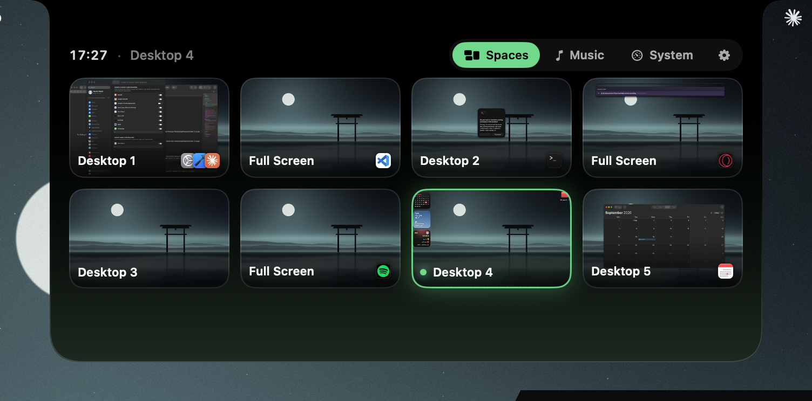
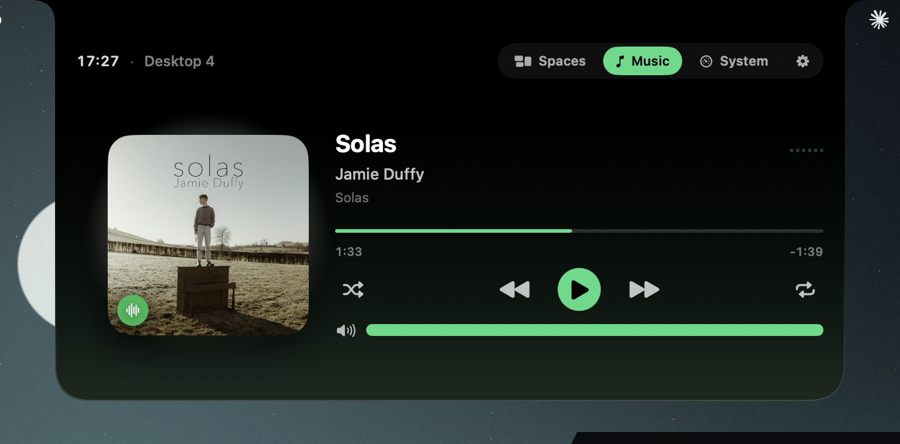
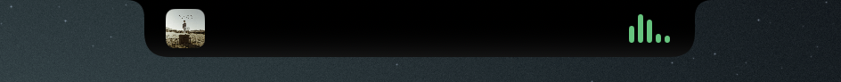
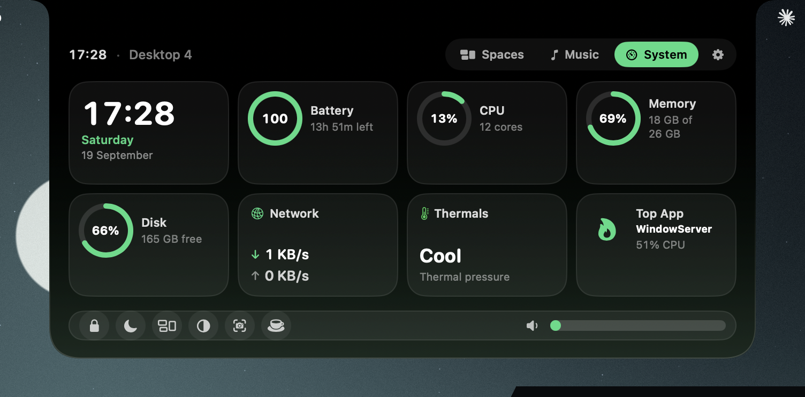
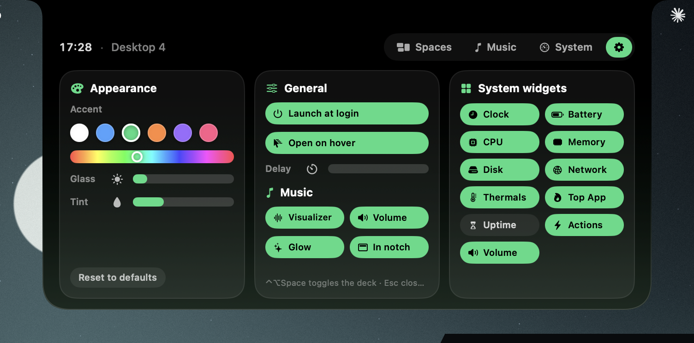

Hover the notch and it opens into a deck: every desktop with a live preview, your music, your Mac's vitals. One glance, one click, gone again.
This is the real thing, rebuilt in HTML: hover to open, click the cards, play the track, change the accent in ⚙. Esc closes, two-finger swipe changes page.
Everything lives under the notch, so it never steals a pixel of your screen until you ask for it.
Every desktop and full-screen app on the display, with a live preview and the icons of what's running there. Click a card and you're there — no sliding through the ones in between.

Artwork that glows to the beat, scrubbing, shuffle, repeat and a volume bar. While it's playing, the closed notch shows the cover and a waveform.


Pick the widgets you care about: clock, battery with time remaining, CPU, memory, disk, network, thermals, the hungriest app, uptime. A dock underneath with lock, sleep display, Mission Control, dark mode, screenshot, keep-awake — and the system volume.

Six accent presets or any hue you like. Glass brightness, tint, hover delay, launch at login, which widgets show. It remembers all of it.

⌃⌥Space opens the deck on the screen your cursor is on, Esc closes it. No mouse needed.
Screens without a notch get a slim virtual one. Each display lists its own desktops and switches independently.
A menu-bar app with no Dock icon. Closed, it's exactly the size of the notch; nothing else on screen changes.
Previews are captured locally and never stored on disk. No accounts, no analytics, no network calls except album art.
Swift and SwiftUI, 1 MB download, idle CPU near zero. Timers slow down when the deck is closed.
NotchDeck 1.0 is free to download. Notarized by Apple, no sign-up, no trial.
NotchDeck walks you through these on first launch. Each one is optional — the deck works with whatever you grant.
Jumping to a desktop is done the way macOS intends: NotchDeck presses Mission Control's own "Switch to Desktop n" shortcut for you. Sending a keystroke requires the Accessibility permission. Nothing is read from other apps.
The live previews in the Spaces page are screenshots of your desktops, taken on your Mac and kept in memory only. macOS calls this "Screen Recording" even for still captures. Without it you still get cards with the app icons.
Playback control talks to Spotify and Music through AppleScript. macOS asks once, the first time you press play from the deck.
Yes. The notch stays available above full-screen apps, and full-screen spaces show up as cards you can jump to directly.
Version 1.0 controls Spotify and Apple Music. Browser playback isn't exposed by macOS to third-party apps in a reliable way, so it's not in this release.
Free. Notarized by Apple. Drag it to Applications and hover your notch.
macOS 14+ · Apple silicon & Intel · 1.0.0